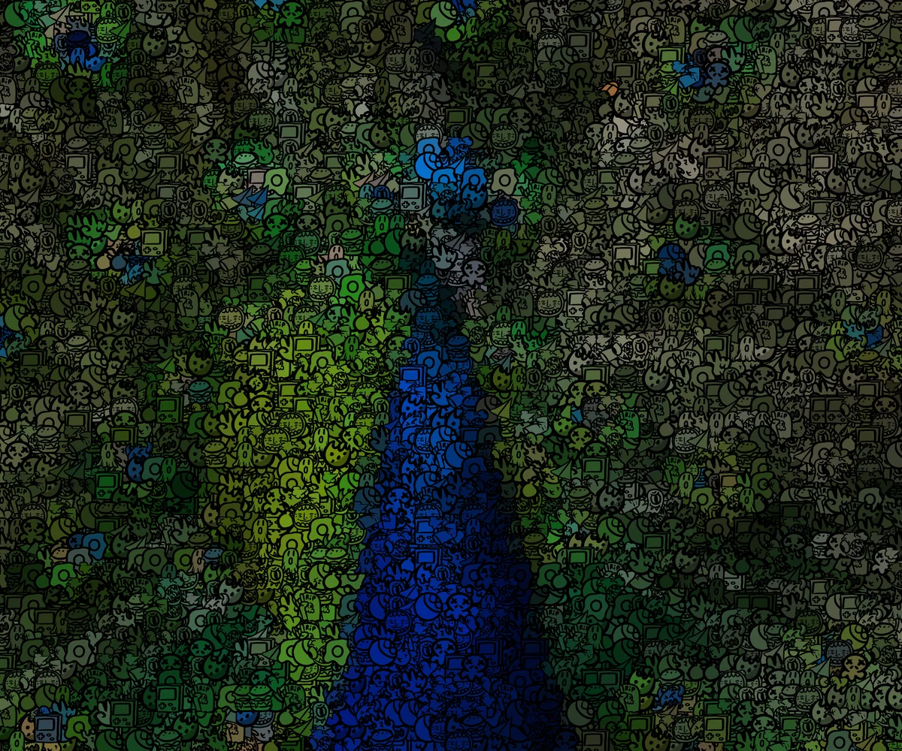
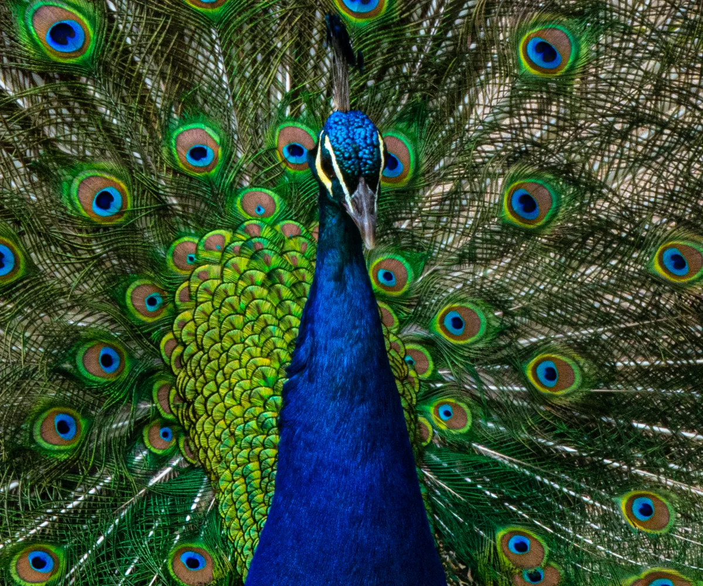

doodleIt
A Python image-processing tool that rebuilds photos from small doodle tiles. A pixelated version of the source sits underneath to keep colors consistent and prevent transparency issues.
- Languages
- PythonHTMLCSS
- Tools
- FlaskNumPyPillow
 View on GitHub
View on GitHub